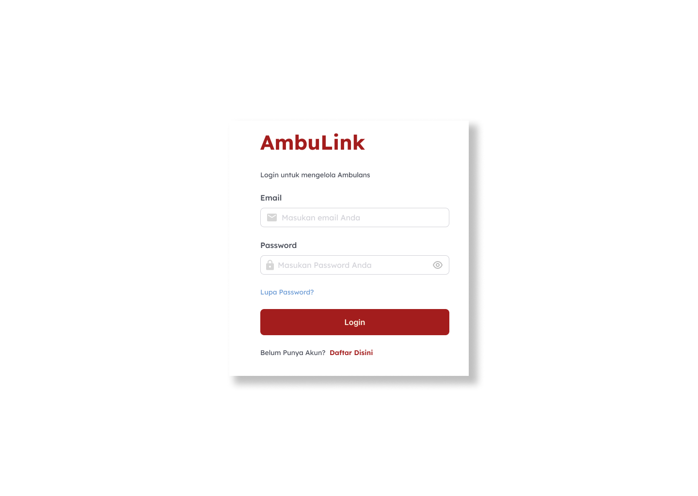

// project details
UI/UX
UI/UX Design for Emergency Ambulance Finder Website
AmbuLink is a UI/UX website project created for a national web design competition.
The project was designed to help users find nearby ambulance services, including both free and paid options, through a responsive, simple, and user-friendly interface.
In this project, I focused on designing the UI/UX while ensuring the user flow remained clear and intuitive, allowing users to easily access information and navigate the platform efficiently, especially during emergency situations.